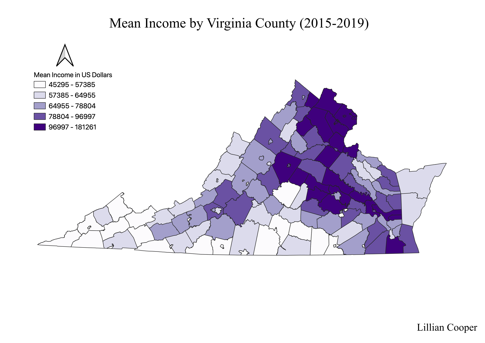

Homework 7: Census data choropleth
Lillian Cooper
This map displays mean income by county within the Commonwealth of Virginia. The region of highest income is in the northernmost part of the state and borders Washington DC. Northern Virginia is largely inhabited by commuters who work in the district. A second region of high income surrounds the city of Richmond, which is the capital of Virginia. Broadly speaking, mean income decreases moving south and west of D.C. and Richmond, which correlates with the increasingly rural character of communities in southern and western Virginia.

Data used for this project
Link to cleaned CSV dataset
Link to geoJSON